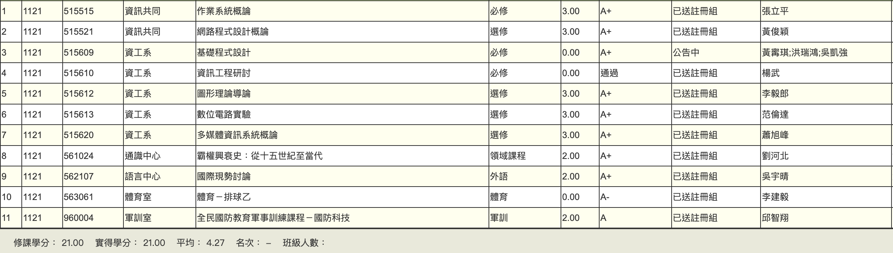

學期成績

作業系統概論
修張立平教授開的，作業有6次都不難，基本上可以拿滿，
期中期末考都只要把考古題練習完、把預錄影片全部看完都可以拿到不錯的分數
最後全班66個人A+，好課推薦
網路程式設計概論
修黃俊穎教授開的，超級有料，每次去系計中做lab就行，每次lab幾乎都會分成3 part以上，
當場做出來的話拿到100%、隔週85%、再隔週好像是70%，但其實lab難度都不高，除了全班競賽的lab以外
每次lab應該都可以拿88分以上，作業也都出的不難，整堂課其實蠻輕鬆的（對C++不熟的人可能會修的有點痛苦）。
我個人是都獨立完成每次lab，但其實老師lab不會禁止討論跟抄襲，
最後我不算出席的10%學期分就已經A+了，好課推薦
基礎程式設計
考gpe，輕鬆刷題就行，A+門檻只有420分，超簡單
資訊工程研討
去教室聽講座的奇怪必修，因為人太多只能在另一間教室聽直播，
因為設備超爛每次去都聽不懂講者在說什麼，就當是自習課出席拿學分就行
圖形理論導論
李毅郎教授開的，作業有點難度，在我的github上有解答，目前開三年作業都出一模一樣，
作業佔50%幾乎全班拿滿，開學時說會抓抄襲結果好像也沒抓；
期中考期末考高的占30%低的占20%，只要把考古題參考過、講義上的證明都理解的話蠻容易考高的，
我期中79 期末93輕鬆A+，好課推薦
數位電路實驗
范倫達教授開的verilog, FPGA課，老師其實教的不多，我幾乎沒在課堂上學到什麼，lab每年都一樣，題目都很有水準，
認真做完可以學到很多，期中考可以帶一個隨身碟入場，
分數考高不難，期末報告是在16週，算是很搞的時間，建議跟精通verilog的朋友一起修。
雖然我最後A+，但還是不太推薦這堂課。
多媒體資訊系統概論
蕭旭峰教授開的奇怪課，作業2,3是玩樂高機器人，考試想考高的話投影片內容要背熟，
不然就是上課要認真聽，教授講課都沒什麼語氣變化，我全勤有幾次都差點睡著，
缺學分的話可以修，想學知識的話不太建議。
霸權興衰史：從十五世紀至當代
一個月只要去2堂課，在e3上會說哪幾天要上課，期末考週要交一份報告，教授會給題單選4題回答，
只要用ChatGPT來生成大概然後再自己整理就行，期末考是從題單裡出，所以大概背一下答案就可以去考了。
整學期幾乎 0 loading，而且最後輕鬆A+，如果沒A+還可以寄信求教授說你要推甄，他就會幫你調分。超級好課推薦
國際現勢討論
吳宇晴老師開的課，作業都有做而且全勤、會舉手回答問題的話輕鬆A+，
老師不會吝嗇給分數，而且也學得到英文，蠻輕鬆就A+了，好課推薦
體育－排球乙
李建毅開的禮拜五早八，幾乎都9:30就下課，我缺席2堂，期末考是考雙人對球，
我覺得自己跟組員都打得很好但還是只有A-，不要缺太多課必過，輕鬆體育學分，
對早八起不來的人不推
全民國防教育軍事訓練課程－國防科技
邱智翔教官，狠狠的把我的4.3搞掉，有期中期末考古題的話可以輕鬆A+，
但我沒有，所以不推。
期中考：
第一題(50%)：攻艦型巡弋飛彈跟攻地型巡弋飛彈有什麼差別，要詳述
第二題(50%)：美國的飛彈防禦系統有幾個階段，飛彈在哪個階段最容易被攔截，為什麼
期末考：
第一題(30%):我國陸軍有什麼裝備，請舉例並選一個詳細介紹功能跟武器
第二題(40%):我國海軍有什麼裝備，請舉例並選一個詳細介紹功能跟武器
第三題(30%):我國空軍有什麼裝備，請舉例並選一個詳細介紹功能跟武器
總結
爛軍訓